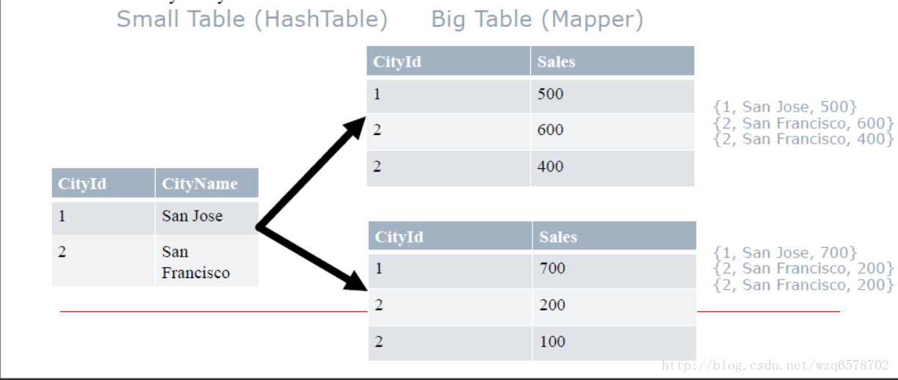
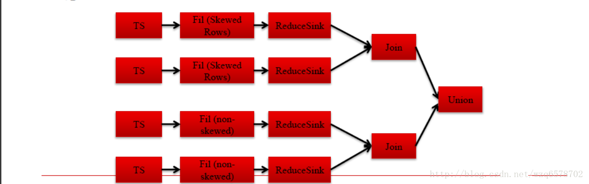

hive原理与源码分析-算子Operators及查询优化器Optimizers（四）
Operator接口
https://insight.io/github.com/apache/hive/blob/master/ql/src/java/org/apache/hadoop/hive/ql/exec/Operator.java?line=66
这个接口最重要的一个方法：
1 | /** |
row是一行数据，tag代表是那张表。用一个整数代表是那张表。
hadoop在执行任务的时候会在每个节点创建一个进程。
每个进程一个实例
每个实例开始执行一次initialize()方法
每个实例执行多次process()方法，每行执行一次，这个进程有几行就执行几次
每个实例最后执行一次close()方法
对于Operator比较正要的有group by Operator和join Operator
前文章节SemanticAnalyzer生成一个QB，之后递归genplan(),然后是genBodyPlan()，genBodyPlan会对group by进行处理：
HiveConf.ConfVars.HIVEMAPSIDEAGGREGATE：在map阶段进行预聚合减少数据量
HiveConf.ConfVars.HIVEGROUPBYSKEW：将一个group by拆成2个group by减少数据量
Hive Group By
HiveConf.ConfVars.HIVEMAPSIDEAGGREGATE：hive.map.aggr，使用Map端预聚合
HiveConf.ConfVars.HIVEGROUPBYSKEW：hive.groupby.skewindata，是否优化倾斜的查询为两道作业
https://insight.io/github.com/apache/hive/blob/master/ql/src/java/org/apache/hadoop/hive/ql/parse/SemanticAnalyzer.java?line=9713
一共四中情况
Hive GroupBy hive.groupby.skewindata
Hive GroupBy hive.groupby.skewindata关闭的时候只有一道mr作业，当参数打开的时候，会进行预聚合，整个过程是2道mr作业。
hive.groupby.skewindata源码
https://insight.io/github.com/apache/hive/blob/master/ql/src/java/org/apache/hadoop/hive/ql/parse/SemanticAnalyzer.java?line=6114
这样我们就能完美了吗，我们的group by就不会倾斜了吗？大部分的group by是不会倾斜的，但是有一种是特殊的。
代数型聚合与非代数聚合
代数型聚合：可以通过部分结果计算出最终结果的聚合方法，如count、sum
非代数型聚合：无法通过部分结果计算出最终结果的聚合方法，如percentile，median
Group By优化只适用于代数型聚合，代数型UDAF，思考为什么？
group by聚合：
https://insight.io/github.com/apache/hive/blob/master/ql/src/java/org/apache/hadoop/hive/ql/exec/GroupByOperator.java?line=735
group by的聚合逻辑就是这个process方法， process方法会调用 processHashAggr和 processAggr方法，即hash聚合和普通 聚合的方法。
Join关联
Join是Hive是最难的部分，也是最需要优化的部分
常用Join方法
普通（Reduce端）Join， Common (Reduce-Side) Join
广播（Map端）Join，Broadcast（Map-Side）Join
Bucket Map Join
Sort Merge Bucket Map Join
倾斜Join，Skew Join
先从最简单的Common Join开始，此join是所有join的基础。
Common Join
也叫做Reduce端Join
背景知识：Hive只支持等值Join，不支持非等值Join
扫描N张表
Join Key相同的放在一起（相同Reduce） -> 结果
流程:
Mapper: 扫描，并处理N张表，生成发给Reduce的<Key, Value> Key = {JoinKey, TableAlias}, Value = {row}
Shuffle阶段
JoinKey相同的Reduce放到相同的
TableAlias 是排序的标识，就是表的编号，相同表的数据在一起是排序的。
Reducer: 处理Join Key并输出结果
最坏的情况
所有的数据都被发送到相同的结点，同一个Reduce
JoinOperator：
https://insight.io/github.com/apache/hive/blob/master/ql/src/java/org/apache/hadoop/hive/ql/exec/JoinOperator.java?line=78
从这个过程中我们可以看到，可以看到左边的表放到内存（放不下才会放到磁盘），因此我们join的时候要把小标放到左边，提供性能。
commonJoinOperation下边还有一些特化的Operator：
先说最简单的commonJoinOperator
https://insight.io/github.com/apache/hive/blob/master/ql/src/java/org/apache/hadoop/hive/ql/exec/CommonJoinOperator.java?line=569
1 | // creates objects in recursive manner |
每来一条数据就会读取一下小表的内容，如果小表比较小，过程会比较快
MapJoin
也叫广播Join，Broadcast Join
从 (n-1)张小表创建Hashtable，Hashtable的键是 Joinkey, 把这张Hashtable广播到每一个结点的map上，只处理大表.
每一个大表的mapper在小表的hashtable中查找join key -> Join Result
Ex: Join by “CityId”

MapJoin适合小表足够小的情况，否则就走 ReduceSinkOperator
如何决定MapJoin
内存要求: N-1 张小表必须能够完全读入内存
Hive决定MapJoin的两种方式（手动／自动）
手动，通过Query Hints（不再推荐）:
SELECT /*+ MAPJOIN(cities) / * FROM cities JOIN sales on cities.cityId=sales.cityId;
/+ MAPJOIN(cities) */ *会决定把cities读入内存，放在hashTable里边，分发到每一个节点。
自动，打开(“hive.auto.convert.join”)
如果N-1张小表小于: “hive.mapjoin.smalltable.filesize”这个值
MapJoin Optimizers
构造查询计划Query Plan时，决定MapJoin优化
“逻辑优化器Logical (Compile-time) optimizers” ：修改逻辑执行计划，把JoinOperator修改成MapJoinOperator
“物理优化器Physical (Runtime) optimizers” 修改物理执行计划(MapRedWork, TezWork, SparkWork), 引入条件判断等机制
逻辑优化之后ReduceSinkOperator.和普通的join operator被摘掉，换成mapjoin。
物理执行计划会被关联到具体的执行引擎，逻辑执行计划的小表部分会在本地执行，即左边小表在本地执行，逻辑执行计划的大表部分会被在远端执行。
MapJoin Optimizers (MR)
Query Hint: 编译时知道哪个表是小表的情况.（手动模式，加一个/*+ MAPJOIN(cities) */ *注释）
Logical Optimizer逻辑优化器: MapJoinProcessor
Auto-conversion: 编译时不知道哪个表是小表的情况（自动模式）
Physical Optimizer物理优化器: CommonJoinResolver, MapJoinResolver.
创建Conditional Tasks 把每个表是小表的情况考虑进去
Noconditional mode: 如果没有子查询的话，表的大小是在编译时可以知道的，否则是不知道的(join of intermediate results..)
自动模式模式分了三种情况，其中一个属于小表，这是前两种情况，第三种是都不是小表。
这个过程在CommonJoinResolver中，
https://insight.io/github.com/apache/hive/blob/master/ql/src/java/org/apache/hadoop/hive/ql/optimizer/physical/CommonJoinResolver.java?line=71
实现细节是：
https://insight.io/github.com/apache/hive/blob/master/ql/src/java/org/apache/hadoop/hive/ql/optimizer/physical/CommonJoinTaskDispatcher.java?line=191
BucketMapJoin
Bucketed 表: 根据不同的值分成不同的桶
CREATE TABLE cities (cityid int, value string) CLUSTERED BY (cityId) INTO 2 BUCKETS;即建表的时候指定桶。
如果把分桶键（Bucket Key）作为关联键（Join Key）: For each bucket of table, rows with matching joinKey values will be in corresponding bucket of other table
像Mapjoin, but big-table mappers load to memory only relevant small-table bucket‟s hashmap
Ex: Bucketed by “CityId”, Join by “CityId”
1和3在一个桶（奇数），2和4一个桶（偶数）。
Bucket MapJoin 执行过程
与MapJoin非常类似
HashTableSink (小表) 写Hashtable是每个桶写一个Hashtable，而不是每张表写一个
HashTableLoader (大表Mapper mapper) 也是每个桶读取一次HashTable
SMB Join
CREATE TABLE cities (cityid int, cityName string) CLUSTERED BY (cityId) SORTED BY (cityId) INTO 2 BUCKETS;
Join tables are bucketed and sorted (per bucket)
This allows sort-merge join per bucket.
Advance table until find a match
建表的时候对桶内的指定字段进行排序，这样的安排可以直接使用common join operator,不需要使用map join operator，直接把表读出来交给common join operator
SMB Join
MR和Spark执行方式相同
用mapper处理大表，处理过程中直接读取对应的小表
Map直接读取小表中相应的文件，相应的部分，避免了广播的开销
小表没有大小的限制
前提是，要知道经常使用哪个键做Join
SMB Join Optimizers: MR
SMB 需要识别„大表‟，以便在大表上运行mapper，执行过程中读取„小表‟. 通常来说，在编译时决定
手动方法，用户可以手动提供hints
Triggered by “hive.optimize.bucketmapjoin.sortedmerge”
Logical Optimizer逻辑优化器: SortedMergeBucketMapJoinProc
自动触发: “hive.auto.convert.sortmerge.join.bigtable.selection.policy” 一个处理类
Triggered by “hive.auto.convert.sortmerge.join”
Logical Optimizer: SortedBucketMapJoinProc
逻辑优化器SortedMergeBucketMapjoinProc的处理过程：
https://insight.io/github.com/apache/hive/blob/master/ql/src/java/org/apache/hadoop/hive/ql/optimizer/SortedMergeBucketMapjoinProc.java?line=42
1 | public Object process(Node nd, Stack<Node> stack, NodeProcessorCtx procCtx, |
回到原来的那个汇总：
join operator是最基本的，其他的mapjoin，SMB都是属于优化。
倾斜关联Skew Join
倾斜键Skew keys = 高频出现的键, 非常多的键，多到一个reduce处理不了
使用Common Join处理非倾斜键，使用Map Join处理倾斜键.
A join B on A.id=B.id, 如果A 表中id=1倾斜, 那么查询会变成
A join B on A.id=B.id and A.id!=1 union
A join B on A.id=B.id and A.id=1
判断是否是倾斜的，主要是判断建是不是倾斜的，那么怎么判断一个建是不是倾斜的呢？
Skew Join Optimizers (Compile Time, MR)
建表时指定倾斜键: create table … skewed by (key) on (key_value);
开关“hive.optimize.skewjoin.compiletime”
Logical Optimizer逻辑优化器: SkewJoinOptimizer查看元数据
直接指定倾斜建，是最好的一种，他会直接给出union的方式处理倾斜：

但是实际环境是苛刻的很多情况并不知道那个建会倾斜，往下看。
Skew Join Optimizers (Runtime, MR)
开关“hive.optimize.skewjoin”
Physical Optimizer: SkewJoinResolver
JoinOperator处理时候计数，如果某个可以被某个节点处理次数超过 “hive.skewjoin.key” 域值
倾斜键Skew key被跳过并且把值拷到单独的目录
ConditionalTask会单独针对倾斜的键作处理，并将结果作Union
即最终结果是倾斜的建处理之后的结果加上未倾斜的common join的结果。不可否认这是一种笨重的方法，最好的方法是直接指定那个键会倾斜，单独处理倾斜。当出现处理慢的时候我们排查是join慢还是group by慢，如果是join慢能不能用map join处理，如果是group by慢，能不能进行预聚合。